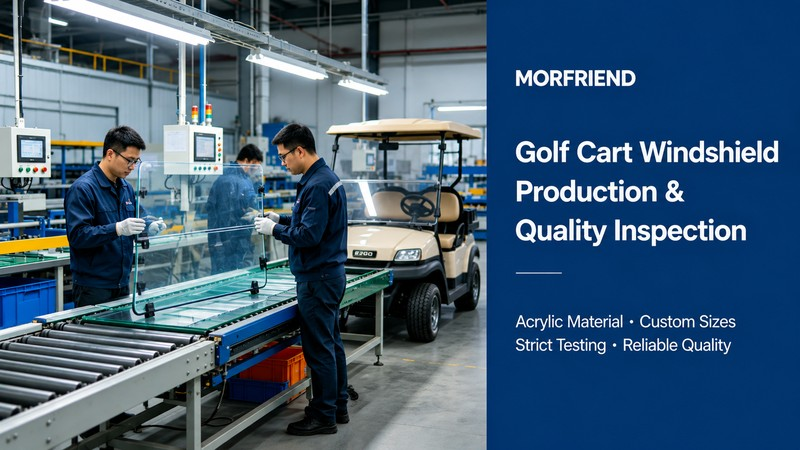

Quick Answer
A golf cart windshield should be replaced when it has serious cracks, deep scratches, poor visibility, yellowing, or structural damage that affects safety and appearance. Choosing the right replacement windshield depends on vehicle compatibility, material quality, installation requirements, and supplier reliability. MORFRIEND provides customized replacement and OEM windshield solutions for golf carts and other low-speed vehicles.
Why Golf Cart Windshield Replacement Matters
A windshield is not only a protection panel —it plays an important role in:
- Driver visibility —clear vision is essential for safe operation in all weather conditions
- Passenger comfort —reduces wind, dust, and debris entering the cabin
- Weather protection —shields occupants from rain, UV rays, and temperature extremes
- Vehicle appearance —a clean, undamaged windshield maintains the vehicle's professional look
- Overall driving safety —structural integrity of the windshield contributes to vehicle safety
Over time, exposure to sunlight, weather conditions, impacts, and daily use can reduce windshield performance.
Replacing a damaged windshield helps maintain a better driving experience and prevents further problems.
5 Signs You Need to Replace Your Golf Cart Windshield
Here are the five most common indicators that it's time for a windshield replacement:
Large Cracks or Impact Damage
Small surface marks may not affect performance, but large cracks or impact damage can weaken the windshield structure.
Replacement is recommended when:
- Cracks continue spreading
- The windshield becomes unstable
- Damage affects visibility
Severe Scratches and Optical Distortion
Deep scratches can create glare and reduce visibility, especially under strong sunlight.
A quality windshield should provide:
- Clear vision
- Low distortion
- Consistent transparency
Yellowing or UV Damage
Outdoor golf carts are exposed to UV rays for long periods.
Aging windshields may show:
- Yellow appearance
- Reduced transparency
- Surface degradation
Replacing an aged windshield can significantly improve the vehicle appearance.
Poor Fit or Installation Problems
A windshield may need replacement if it:
- Does not fit properly
- Has loose mounting points
- Creates vibration during driving
Correct dimensions and professional manufacturing are essential for reliable installation.
Upgrading Vehicle Appearance or Function
Some owners replace windshields not because of damage, but to upgrade the vehicle.
Common upgrades include:
- Clearer windshield designs
- Fold-down windshield systems
- Custom shapes
- Branded fleet designs
How Much Does a Golf Cart Windshield Replacement Cost?
The replacement cost depends on several factors:
Standard replacement windshields are usually more affordable, while custom OEM solutions may require additional development and tooling costs.
For commercial fleets and distributors, working directly with a manufacturer can provide better consistency and long-term supply stability.
Choosing the Right Replacement Windshield
When selecting a replacement windshield, consider these three key areas:
Vehicle Compatibility
Make sure the windshield matches the specific golf cart model and mounting system. Incorrect dimensions can lead to installation problems and safety issues.
Material Performance
Common materials include acrylic and polycarbonate, selected based on optical clarity, impact resistance, and outdoor durability requirements.
Supplier Capability
A reliable supplier should provide accurate dimensions, stable quality, custom production support, and technical documentation.
MORFRIEND Replacement Windshield Solutions
With more than 27 years of manufacturing experience, MORFRIEND provides customized windshield solutions for:

Our capabilities include:
- Replacement windshield production
- OEM and ODM customization
- Acrylic and polycarbonate processing
- Custom dimensions and designs
- Quality inspection support
Whether customers need replacement windshields for existing vehicles or customized solutions for new projects, MORFRIEND supports global customers with reliable manufacturing and export experience.
Conclusion
Replacing a golf cart windshield at the right time improves safety, appearance, and overall vehicle performance.
For businesses looking for a reliable replacement windshield supplier, choosing an experienced manufacturer with customization capability and quality control is essential.
MORFRIEND helps global customers develop dependable golf cart windshield solutions for replacement, OEM, and fleet applications.
Frequently Asked Questions
How often should a golf cart windshield be replaced?
There is no fixed replacement schedule. A windshield should be replaced when damage, aging, or visibility issues affect performance. Regular inspection helps identify problems early.
Can a scratched golf cart windshield be repaired?
Minor scratches may be polished, but deep scratches, cracks, or severe damage usually require replacement. If optical clarity is compromised, replacement is the safer option.
What is the best material for a replacement golf cart windshield?
The best material depends on the application. Acrylic provides excellent clarity and appearance, while polycarbonate offers higher impact resistance. Both materials are commonly used in golf cart windshield manufacturing.
Can MORFRIEND make replacement golf cart windshields?
Yes. MORFRIEND provides customized replacement and OEM windshield manufacturing services for global customers, supporting both standard replacements and custom projects.